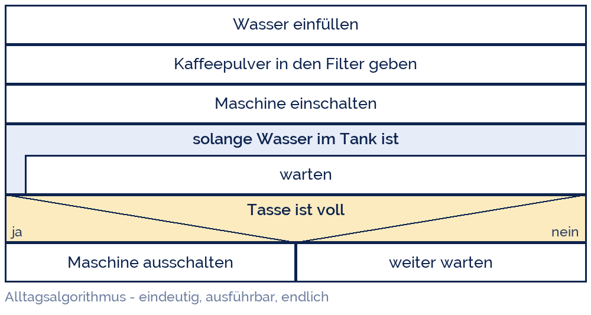

shogun
shogun
Good morning!
Nur das Schöne wird die Welt retten!
Fjodor Dostojewski
Nicht verzagen, Doc Alvers fragen!
Informatik — FOS 12
Programmiersprachen
Schnittstelle Mensch–Maschine: Algorithmus, Syntax, Semantik
Nicht verzagen, Doc Alvers fragen!
Kapitel 01
Zwei Welten
Der Mensch denkt in Sätzen, die Maschine kennt nur an und aus
Nicht verzagen, Doc Alvers fragen!
Ein Rechner versteht kein Deutsch
„Rechne mir bitte den Durchschnitt aus“ — für einen Prozessor bedeutungslos
Eine CPU kennt nur Bitmuster: lade, addiere, springe, speichere
Eine Programmiersprache ist der Übersetzer dazwischen — für beide Seiten lesbar
Sie ist künstlich: erfunden, exakt festgelegt, ohne Ausnahmen und ohne Ironie
Der Preis dafür: jede Kleinigkeit muss gesagt werden — der Rechner rät nie
Nicht verzagen, Doc Alvers fragen!
Vier Ebenen zwischen Mensch und Maschine
| Ebene | Beispiel | wer versteht das? | Nähe zur Maschine |
|---|---|---|---|
| natürliche Sprache | „Addiere 97 dazu“ | Mensch | keine — mehrdeutig |
| Hochsprache | x = x + 97 | Mensch + Übersetzer | gering |
| Assembler | ADD AL, 97 | Fachleute | hoch — ein Befehl je Schritt |
| Maschinencode | 00000100 01100001 | die CPU | das ist die CPU |
Nach oben wird es bequemer, nach unten genauer und schneller
Wir arbeiten in einer Hochsprache — hier: Python
Der Weg nach unten heißt Übersetzen: Compiler oder Interpreter erledigen ihn
Nicht verzagen, Doc Alvers fragen!
Kapitel 02
Der Algorithmus
Die Idee ist älter als jeder Computer
Nicht verzagen, Doc Alvers fragen!
Was ist ein Algorithmus?
Algorithmus = eindeutige, endliche Beschreibung eines Lösungsweges
Er beschreibt wie gerechnet wird — nicht, womit gerechnet wird
Kochrezept, Bauanleitung, schriftliche Division: alles Algorithmen ohne Computer
Der Name kommt von al-Chwarizmi, Bagdad, um 825 — sein Buch lehrte das Rechnen mit Ziffern
Ein Programm ist ein Algorithmus, aufgeschrieben in einer Programmiersprache
Nicht verzagen, Doc Alvers fragen!
Fünf Eigenschaften — und woran man sie prüft
| Eigenschaft | bedeutet | Testfrage | Gegenbeispiel |
|---|---|---|---|
| Eindeutigkeit | jeder Schritt ist klar | Kann man ihn verschieden lesen? | „etwas Salz dazu“ |
| Ausführbarkeit | jeder Schritt ist machbar | Kann der Ausführende das? | „teile durch 0“ |
| Endlichkeit | hört irgendwann auf | Endet es garantiert? | „zähle bis unendlich“ |
| Determiniertheit | gleiche Eingabe, gleiches Ergebnis | Kommt zweimal dasselbe raus? | „wähle zufällig“ |
| Allgemeingültigkeit | gilt für eine ganze Klasse | Geht es auch mit anderen Zahlen? | „gib 42 aus“ |
Alle fünf zusammen machen aus einer Beschreibung einen Algorithmus
In der Prüfung: Eigenschaft nennen und am Beispiel begründen
Nicht verzagen, Doc Alvers fragen!
Ein Algorithmus ohne Computer
Jeder Schritt ist eindeutig und ausführbar — ein Mensch ist der Prozessor
Die Schleife endet, weil der Tank leer wird: damit ist der Ablauf endlich
Diese Darstellung heißt Struktogramm — mehr dazu in Woche 12
Beachtet: kein einziger Schritt sagt etwas über Computer aus

Nicht verzagen, Doc Alvers fragen!
Ein Algorithmus sagt, WIE gerechnet wird — unabhängig davon, WER oder WAS am Ende rechnet.
Merksatz
Nicht verzagen, Doc Alvers fragen!
Kapitel 03
Syntax und Semantik
Form und Bedeutung sind zwei verschiedene Dinge
Nicht verzagen, Doc Alvers fragen!
Die beiden Grundbegriffe
Syntax — die Form
Welche Zeichenfolgen sind überhaupt erlaubt?
Klammern, Doppelpunkte, Einrückung, Schreibweise
Verstoß = das Programm startet gar nicht erst
Vergleich: Rechtschreibung und Grammatik
Semantik — die Bedeutung
Was tut eine syntaktisch korrekte Anweisung?
Der Rechner tut, was dasteht — nicht, was gemeint war
Verstoß = das Programm läuft, aber falsch
Vergleich: „Der Hund beißt den Mann“ ist korrekt — und trotzdem nicht gemeint
Nicht verzagen, Doc Alvers fragen!
Zwei Fehler, zwei Welten
# 1) Syntaxfehler - Python startet nicht
if note < 5
print('bestanden')
# ^ der Doppelpunkt fehlt: SyntaxError: expected ':'
# 2) Semantischer Fehler - Python laeuft, das Ergebnis ist falsch
note = 5
if note < 5:
print('bestanden')
else:
print('nicht bestanden')
# Ausgabe: nicht bestanden - gemeint war <= 4, geschrieben steht < 5Nicht verzagen, Doc Alvers fragen!
Drei Fehlerarten — wann fallen sie auf?
| Fehlerart | wann sichtbar | Beispiel | wer findet ihn |
|---|---|---|---|
| Syntaxfehler | vor dem Start | Doppelpunkt fehlt | der Übersetzer, sofort |
| Laufzeitfehler | während der Ausführung | Division durch 0 | das Programm stürzt ab |
| Logikfehler | nie von allein | < statt <= | nur ein Testfall |
Der gefährlichste ist der Logikfehler: das Programm läuft und lügt
Deshalb gehören zu jedem Programm Testfälle mit bekanntem Ergebnis
Nicht verzagen, Doc Alvers fragen!
Kapitel 04
Vom Text zum Prozess
Compiler, Interpreter und die Sprachfamilien
Nicht verzagen, Doc Alvers fragen!
Compiler oder Interpreter?
| Compiler | Interpreter | |
|---|---|---|
| Vorgehen | übersetzt einmal komplett | liest und führt Zeile für Zeile aus |
| Ergebnis | ausführbare Datei (.exe) | kein eigenes Ergebnis, nur Wirkung |
| Fehler | alle vor dem Start gemeldet | erst beim Erreichen der Zeile |
| Tempo | schnell im Lauf | langsamer, dafür sofort startklar |
| Sprachen | C, C++, Java (zu Bytecode) | Python, JavaScript, PHP |
Python ist eine Interpretersprache — deshalb geht Ausprobieren so schnell
Moderne Systeme mischen beides (JIT): erst interpretieren, heiße Stellen übersetzen
Nicht verzagen, Doc Alvers fragen!
Warum ausgerechnet Python?
Wenig Zeremonie: kein Gerüst, keine Typangaben, Einrückung statt Klammern
Der Code liest sich fast wie der Algorithmus — das ist in diesem Lernbereich das Ziel
Sofort testbar: eine Zeile in die Konsole, sofort das Ergebnis
Überall vorhanden: Schule, Uni, Datenauswertung, KI, Mikrocontroller
Der Lehrplan sagt „höhere Sprache nach Wahl“ — die Konzepte gelten für alle
Nicht verzagen, Doc Alvers fragen!
Fun Facts: Programmiersprachen
Ada Lovelace schrieb 1843 den ersten Algorithmus für eine Maschine, die nie gebaut wurde
Grace Hopper baute 1952 den ersten Compiler — und klebte 1947 eine echte Motte ins Logbuch: der erste Bug
Python heißt nicht nach der Schlange, sondern nach Monty Python's Flying Circus
Es gibt über 700 Programmiersprachen — und Sprachen, die nur zum Ärgern erfunden wurden (Brainfuck, 8 Befehle)
COBOL von 1959 läuft heute noch: ein großer Teil des weltweiten Zahlungsverkehrs
Nicht verzagen, Doc Alvers fragen!
Eure Aufgabe: Algorithmen prüfen
Schreibt einen Algorithmus für Schuhe binden — so eindeutig, dass ein Roboter ihn ausführen kann
Tauscht mit dem Nachbarn und spielt ihn wörtlich durch — jede Lücke aufschreiben
Prüft an eurem Text alle fünf Eigenschaften und notiert je einen Beleg
Findet zu jeder der drei Fehlerarten ein eigenes Beispiel aus dem Alltag
Frage zum Nachdenken: Ist ein Kochrezept determiniert?
Nicht verzagen, Doc Alvers fragen!